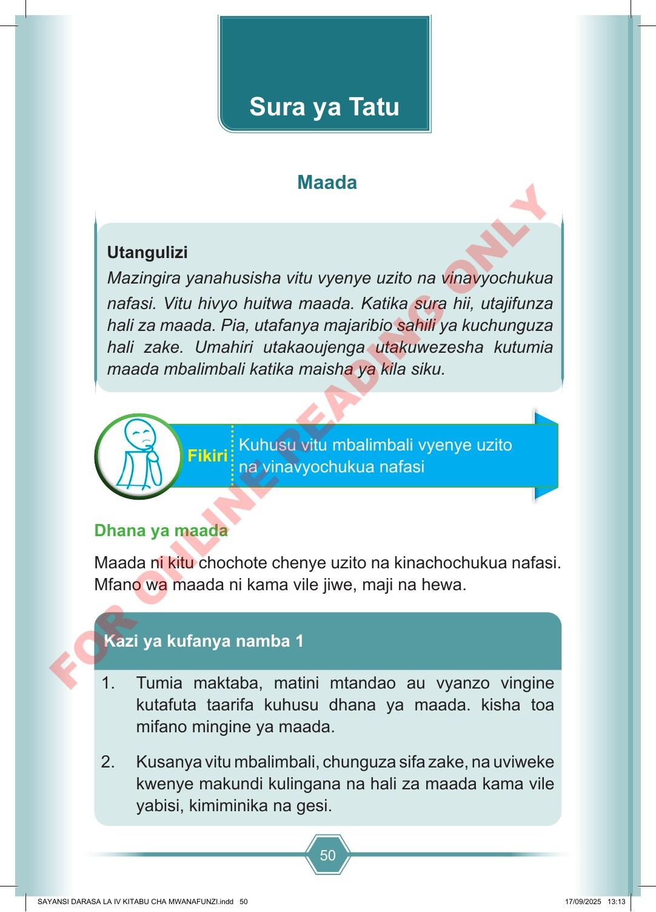

50 Utangulizi Mazingira yanahusisha vitu vyenye uzito na vinavyochukua nafasi. Vitu hivyo huitwa maada. Katika sura hii, utajifunza hali za maada. Pia, utafanya majaribio sahili ya kuchunguza hali zake. Umahiri utakaoujenga utakuwezesha kutumia maada mbalimbali katika maisha ya kila siku. Kuhusu vitu mbalimbali vyenye uzito na vinavyochukua nafasi Fikiri Dhana ya maada Maada ni kitu chochote chenye uzito na kinachochukua nafasi. Mfano wa maada ni kama vile jiwe, maji na hewa. 1. Tumia maktaba, matini mtandao au vyanzo vingine kutafuta taarifa kuhusu dhana ya maada. kisha toa mifano mingine ya maada. 2. Kusanya vitu mbalimbali, chunguza sifa zake, na uviweke kwenye makundi kulingana na hali za maada kama vile yabisi, kimiminika na gesi. Kazi ya kufanya namba 1 Sura ya Tatu Maada SAYANSI DARASA LA IV KITABU CHA MWANAFUNZI.indd 50 SAYANSI DARASA LA IV KITABU CHA MWANAFUNZI.indd 50 17/09/2025 13:13 17/09/2025 13:13 F O R O N L I N E R E A D I N G O N L Y